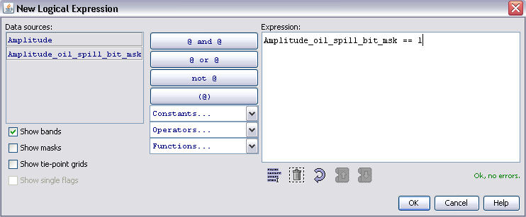

| Bitmask Editor | |
If you chose to edit a bitmask the Bitmask Editor appears like in the following screenshot:

In the upper area of the window, the properties name, description, colour and transparency can be changed. In the lower part of the window, the expression can be defined with a few mouse clicks or typed into the text field on the right.